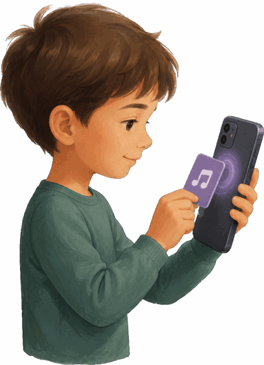

Karte scannen
Halte ein NFC-Tag an die Oberseite deines Handys, um es zu scannen. Nach dem Scannen erscheint das Tag als Karte in deinem Set.
Von der leeren App zur ersten Geschichte in drei Schritten.
Halte ein NFC-Tag an die Oberseite deines Handys, um es zu scannen. Nach dem Scannen erscheint das Tag als Karte in deinem Set.

Karte erkannt! Tippe die Karte an, um sie zu öffnen, und füge Audio hinzu: eine lokale Datei, einen Podcast-Feed oder einen Titel von deinem eigenen Musikserver. Dann geht es zurück zur Kartenseite.
Alles bereit! Starte den Kindermodus und gib das Handy deinem Kind. Jede verknüpfte Karte spielt jetzt beim Auflegen ab. Zum Verlassen des Kindermodus drückst du deine vier geheimen Tasten in der richtigen Reihenfolge – die Abfolge legst du unter Extras → Passwort fest.
Tipp: Fasse Karten in Sets wie „Gute-Nacht-Geschichten“ oder „Autofahrten“ zusammen und gib jedem Set eine eigene maximale Lautstärke, Wiedergabereihenfolge und einen eigenen Wiederholungsmodus.